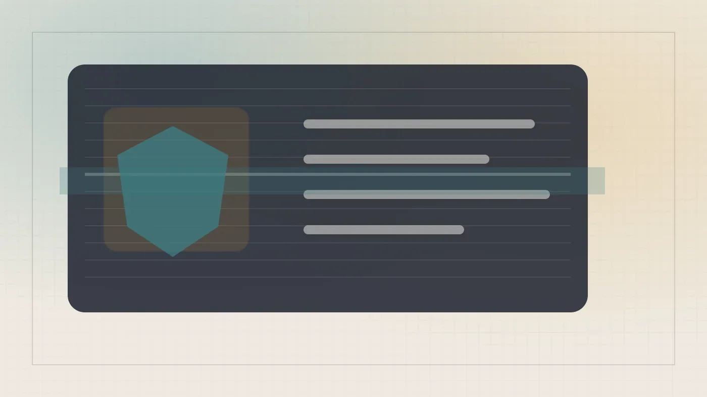

Код
Установка Ubuntu 26.04 на Asus GX10: решение проблемы энергопотребления
Переход на чистую Ubuntu 26.04 на Asus GX10: +15 Вт, фикс через dgx-spark-mlnx-hotplug, свежие драйверы и ZFS-компрессия.
Habr AI
18 июн. 2026 г.Материалы из источника Habr AI.
191 материалов
Переход на чистую Ubuntu 26.04 на Asus GX10: +15 Вт, фикс через dgx-spark-mlnx-hotplug, свежие драйверы и ZFS-компрессия.
Бесплатный MCP-сервер с 257 тысячами экранов для поиска дизайн-референсов — LazyWeb от экс-product lead Duolingo.
Как автоматизировать оценку RAG без программирования? История с Claude Code.

Три opensource-фреймворка для локального развёртывания ИИ-агентов: Gaia от AMD, Ailoy на Rust и Opperator с терминальным интерфейсом.

2 млн заблокированных аккаунтов Claude за год — разбираем 5 триггеров и чек-лист защиты
Как в Claude Code разделить работу между Opus и DeepSeek V4 и сократить расходы на токены в десятки раз.

Как превратить историю платежей в структурированную базу знаний для LLM — решение Sber ИИ Lab

Anthropic опубликовала результаты самого масштабного качественного опроса пользователей Claude: 80 508 интервью о надеждах и страхах.

Когнитивный разрыв: кто освоит LLM, автоматически окажется на шаг впереди
Как собрать домашний сервер для локального ИИ-кодинга за 35 тысяч рублей и не зависеть от облачных провайдеров.

Fable 5 заблокирована, Cursor продан за $60 млрд — неделя, которая переписала расклад в ИИ для разработчиков

Платформа для бизнес-анализа по BABOK избавилась от привязки к Claude и заработала с локальными моделями

Паспорт вместо логина: OpenAI и Anthropic закрывают анонимный доступ к своим моделям

Четыре студента основали Cursor в 2022-м — SpaceX покупает их компанию за 60 млрд долларов

Как устроен кодинг-агент изнутри: Agent Loop, sandbox и почему bash — не универсальное решение

OpenAI сделала браузер с ChatGPT внутри — но зачем, если есть Chrome с расширением?

Как кэш для LLM делает агента дорогим без единой ошибки — и что с этим делать

Tracer, ClickHouse и ReAct: как VK Cloud Conf 2026 анонсировала инструмент для отладки с ИИ-агентами

Как зашить архитектурные правила в CI, чтобы Claude Code перестал склеивать всё со всем

Почему зелёный дашборд adoption ничего не доказывает — и что спросить у себя вместо него

ИИ написал код и тесты — мутационное тестирование нашло дыры там, где покрытие казалось отличным

Как собрать управляемый Deep Research без подписки за $100 — на open-source и бесплатных API

Детекторы ИИ ошибаются в половине случаев — как студентам защитить свои дипломы

Шесть лет в Excel — и 12 дней до рабочего десктопного приложения на Electron и FastAPI

91% оборота склада — один артикул. Данные были в 1С годами. Как это исправить без дата-сайентистов

Что если проектировать архитектуру не для программиста, а для языковой модели — и зачем отказываться от рефакторинга

Как биграммная модель на 49 параметрах превращается в GPT: пять шагов эволюции LLM

Студенты из Петербурга попали на AAAI с 30 000 заявок — и случайно сели за стол к учёному с 40 000 цитирований

Почему промпт под Opus 4.8 ломает Fable 5 — и как выстроить схему для трёх моделей сразу

Главный инженер Claude Code о пяти новых нормах работы, когда ИИ пишет код быстрее, чем люди успевают его проверять.